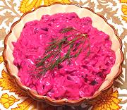

|
Beet & Yogurt SaladTurkey - Yogurtlu Pancar Salatasi | ||||
| Makes: Effort: Sched: DoAhead: |
6 salad ** 1-1/2 hr Yes |
This is a popular salad in Turkey. With gentle acidity, it is quite different from the Russian style vinaigrette beet salad now favored in Post Soviet Armenia. | |||
|
|
1-1/2 2 1 2 2 1 1/2 |
# c cl T T T t |
Beets (1) Yogurt (2) Garlic Dill, fresh Olive Oil Lemon Juice Salt |
Make - (1-1/2 hr - 20 min work)
|